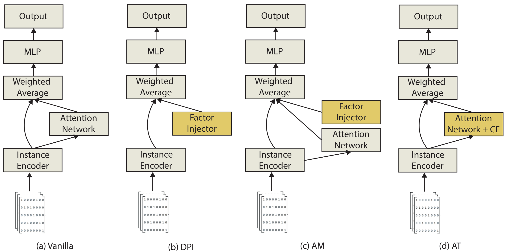

Incorporating probabilistic domain knowledge into deep multiple instance learning
Ghadi S. Al Hajj, Aliaksandr Hubin, Chakravarthi Kanduri, Milena Pavlovic, Knut Dagestad Rand, Michael Widrich, Anne Schistad Solberg, Victor Greiff, Johan Pensar, Günter Klambauer, Geir Kjetil Sandve
The 41st International Conference on Machine Learning (ICML 2024)

Abstract
Deep learning methods, including deep multiple instance learning methods, have been criticized for their limited ability to incorporate domain knowledge. A reason that knowledge incorporation is challenging in deep learning is that the models usually lack a mapping between their model components and the entities of the domain, making it a non-trivial task to incorporate probabilistic prior information. In this work, we show that such a mapping between domain entities and model components can be defined for a multiple instance learning setting and propose a framework DeeMILIP that encompasses multiple strategies to exploit this mapping for prior knowledge incorporation. We motivate and formalize these strategies from a probabilistic perspective. Experiments on an immune-based diagnostics case show that our proposed strategies allow to learn generalizable models even in settings with weak signals, limited dataset size, and limited compute.
Reference
@inproceedings{
AlHajj2024,
title={Incorporating probabilistic domain knowledge into deep multiple instance learning},
author={Al Hajj, Ghadi S. and Hubin, Aliaksandr and Kanduri, Chakravarthi and Pavlovic, Milena and Rand, Knut and Widrich, Michael and Solberg, Anne and Greiff, Victor and Pensar, Johan and Klambauer, Günter and Sandve, Geir Kjetil
},
booktitle={The 41st International Conference on Machine Learning ({ICML 2024})},
year={2024},
url={todo}
}